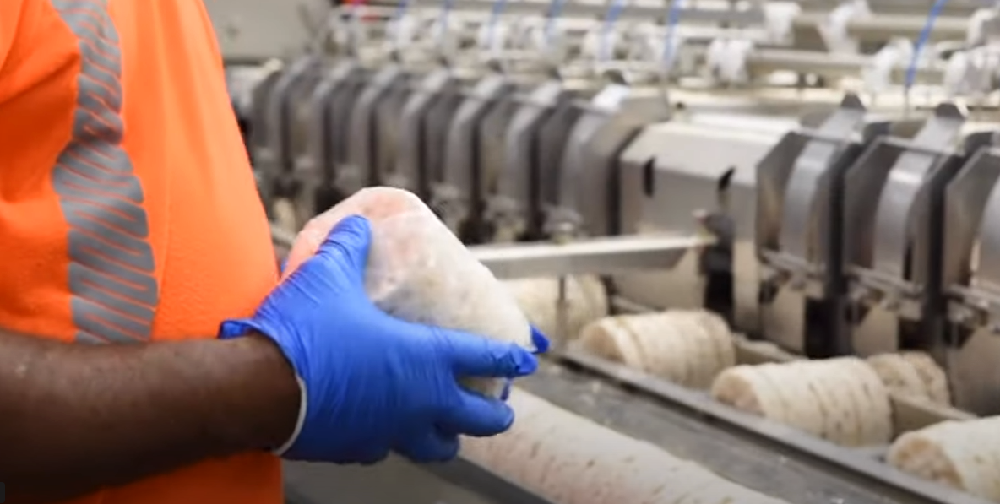

INDUSTRIAL UX
Quaker Oats BBS Safety System
ROLE: Lead & Implementor
The core of BBS was utilizing user research, understanding user flows, user observations, user flow assessments, understanding literal and figurative “pinch points”, understanding user needs, understanding Jobs To Be Done, and improving user experience while ensuring safe processes for the reduction of safety incidents.
-

Empathize & Define
We developed user personas for each job within the Quaker Oats facility. Job descriptions were analyzed and user flows of all jobs were developed from user interviews, safety data, and SOPs. Employees with seniority in each job area were asked to confirm the user flows/SOPs and for any additional safety concerns from them.

Ideate & Prototype
Based on past safety injury data and observation, we determined pinch points (literal and figurative), and areas of concern. Behavioral job checklists were designed for each job task group. Users were consulted to confirm steps were current processes.

Implement & Test
I created a database to record all user data collected from the behavioral safety user interview checklists and feedback.
We did ongoing user testing using the safety checklists. Some user observations were done covertly. At other times, we would ask the user if we could observe them performing a particular set of tasks. We observed and made note of their behavior on the checklists. We would only stop an observation if the user was about to perform very unsafe behaviors.
After the tests, we would provide feedback on how they performed and reward them for doing safe behaviors. For any unsafe tasks, we would ask what prompted them to perform them in such a manner (past training, environmental challenges, or behavioral pressures). We would also ask for any steps or equipment that might make the process safer.

Feedback & Iteration
Based on compiled user testing data and feedback we would determine if certain behaviors no longer needed to be on the checklists, make additions to checklists, make changes to SOPs and lead that training, determine if management should to alter their directives (to decrease pressure to perform unsafe behaviors), make changes to safety protocols and equipment, and change the user interface, if possible.